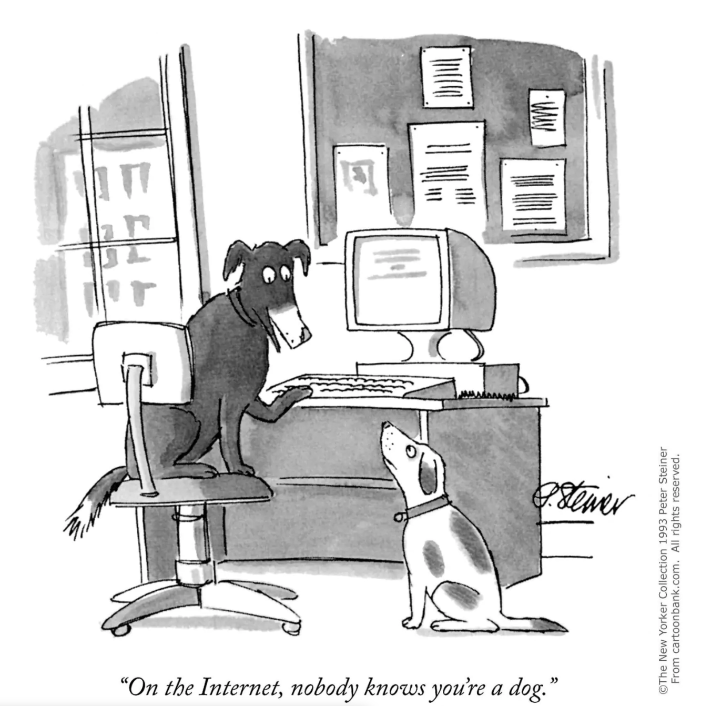

Nodes and Networks of Computation
In previous weeks we studied the three main components of a traditional stand-alone computer system: Input (Data) -> Processing (Algorithms) -> Output (Visualizations). This week, we focus on how this single physical computer (a complete computational unit) can operate as just one "node" in a much larger and more complex network of computers.
Networking enables a single computational node to overcome limits of compute power, memory, and bandwidth by becoming part of a much larger network. When data and computation can be distributed over many individual computing units each node can perform certain sub/tasks as part of a much larger computational process. Scaling-up from individual computers to networks allows for changes not just in quantity of computing but in quality. Network effects describe the emergent property of networks in which the whole network has entirely new and sometimes unexpected properties beyond just the simple sum of its parts. In later weeks we'll discuss social networks, which also have their own properties and which often take on emergent unique properties that are also more than the sum of their individual actors. There is also a vast and growing "Internet of Things (IoT)" connecting sensors in "things" all over the world from fitbits to automobile GPS sensors to nuclear powerplants. Blockchain/Bitcoin also uses the power of networks to build new models of decentralized trust for the exchange of goods, services and digital currency.
Networks bring a double-edged sword of opportunity and risk. On the one hand, networks offer a robustness that a single computer can't. If a computer or node is down, information or processes can be rerouted easily to avoid the compromised node. Similarly, networks can be architected and segmented to optimize processing power and create subdomains of protection and trust. However, the vast interconnected network also provides opportunities for hacking, spreading propaganda, stifling dissent or facilitating illegal transactions via the Darknet.
We begin the week with a quick introduction to operating systems by working at the command line. We will also learn about how networks are created to try to prevent threats and unauthorized intrusions, as well as the ways viruses and malware can circumvent these. Our ethical concern revolves around both the concentrated power and potential abuse of network effects by both state and non-state actors. First, we'll consider cyber warfare and discuss whether current paradigms for "just warfare" need to be updated to accommodate our new reality. We'll then explore Wikileaks to acquire a more informed and critical opinion on possible distinctions between Black-Hat (i.e. criminal) and White-Hat (i.e. ethically-motivated) hacking.
In DataCamp we will continue with our Introduction to Python coding lessons as well as a brief introduction to the shell.
Monday: Operating Systems and Networks
- How Computers Work: Hardware and Software (5:22) Code.org, Jan 2018
- The Internet: IP Addresses & DNS (6:44) Code.org, Sep 2015
- The Internet: Packets, Routing and Reliability Code.org (6:25) Sep 2015
- Emergence - How Stupid Things Become Smart Together, Kurzgesagt (7:30) Nov 2017
- The Wired Guide to the Internet of Things, Arielle Pardes, Wired, Nov 2020
- The Internet of Things, Information Is Beautiful (Interactive Visualization, click through on diagrams)
- DataCamp, Introduction to Shell
- (ONLY) Chapter 1: Watch out for required spaces and don't worry if you need to ask for hints or even show answers. This exercise just to give you a sense of what it's like to work at the command line. We will practice in class.
- DataCamp, Intro to Python
- Chapter 2: Python Lists - spread out over today and Wednesday (accompanying homework videos/readings are shorter both days). Today complete through "subsetting lists of lists."
- Test Your Understanding
- What is a list? How do you select from and slice lists and lists of lists (it can be tricky!)
- Key terms: CPU, OS, IP address, DNS, emergence
Wednesday: Security
- Network Theory Overview (5:50) These first two videos provide a lightening introduction.
- Graph Theory Overview (4:21) We will take a more in-depth look in our week on social networks.
- Asymmetric Encryption (4:40) Simply Explained, Oct 2017
- What is Blockchain? Centre of Int'l Governance Innovation, (6:26) Jan 2018
- The Internet: Cybersecurity and Crime Code.org (5:01) Aug 2015
- Malware: The Difference Between Viruses, Worms and Trojans Kapersky Labs (2:45)
- StuxNet: Anatomy of a Computer Virus Patrick Clair (3:21)
- World's Biggest Security Breaches Information is Beautiful (Which worries you most and why?)
- 10 Dark web links to explore and The Hidden Wiki (if you wish to explore, you can download Tor here, read full instructions and take precautions Download Tor)
- DataCamp, Intro to Python
- (Finish) Chapter 2: Python Lists
- Chapter 3: Functions and Packages
- Test Your Understanding
- More with lists: How can you add and delete elements to your list?
- Practice with functions versus methods (different depending on the type of object); if it's been awhile since you've worked with some of the math equations, don't worry--they give you everything you need to know (go back to unit 1 if you need to refresh how to do multiplication etc).
- Random versus Designed networks
- Graph Theory is a way to model networks: what are the basic elements?
- How does asymmetric encryption relate to blockchain?
- What are ways that seemingly secure systems can be breached?
- What are the kinds of sites you can find on the Dark Web?
Friday: CyberWarfare and Wikileaks
Note on grade spreadsheet: We have taken down the spreadsheets and will let you know when Tam has Moodle up and running. At that point we will do an inventory to make sure we have all excused absences, bonus points, etc, accounted for. Do make sure you are up to date on all the Datacamps--an easy 100%! We also plan to offer some extra credit options later in the semester for those interested.
- What is Net Neutrality ACLU Open all smaller windows to familiarize yourself with it. ACLU has a strong point of view, so take this POV under consideration as you read.
- International Cyberlaw in Practice: Interactive Toolkit Read: Scenario 1: Election Interference
- A Brief Primer on International Law and Cyberspace, Duncan Hollis, Carnegie Endowment for International Peace, Jun 2021
- Russian Cyber Operations and Ukraine: The Legal Framework, Michael Schmitt, Lieber Institute, West Point, Jan 2022
- Legal Experts: StuxNet Attack on Iran was an Illegal 'Act of Force'', Kim Zetter, Wired, Mar 2013
- Wikileaks CIA Files: The 6 Biggest Spying Secrets Revealed by the Release of Vault 7, Andrew Griffin, UK Independent.co.uk, Mar 2017
- A Murderous System is being Created Before Our Very Eyes, UN Special Rapporteur on Torture, Nils Melzer Republik.com, Dec 2019
- DataCamp, Intro to Python
- Chapter 4: NumPy
- Test Your Understanding
- Why might we want to convert a Python list into a Numpy array?
- Which example of non-net neutrality by internet providers concerns you most, and why?
- Was Stuxnet illegal? Why or why not?
- What are the revelations from Wikileaks?
- Are whistleblowers and hacktivism justified? Do we have a right to know what Wikileaks revealed?
In Class Demos:
- UNIX Exercises:
- Unix Command Tutorial
- Mac Network Commands or UNIX Network Commands
- Mac built-in ActivityMonitor or Windows Admin PowerShell pktmon
- Network:
- 256 SHA Hash at the Command Line (sha256sum)
- PKI Asymmetric Key Generation (ssh-keygen)
- CoinMarketCap.com and Crypto.com and CoinDesk.com
- Etherscan.io Blockchain Viewer
- Blockchain Demo and MetaMask.io
